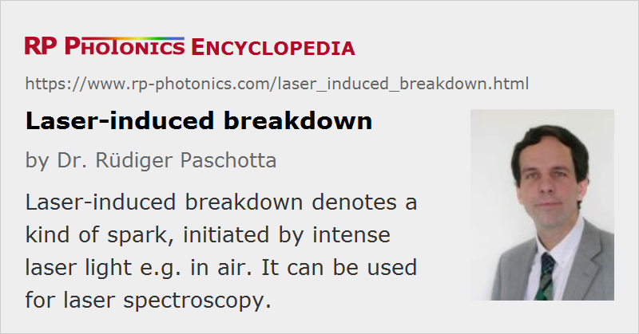

Laser-induced Breakdown
Definition: a kind of spark, initiated by intense laser light
Category: physical foundations
How to cite the article; suggest additional literature
Author: Dr. Rüdiger Paschotta
From electrical engineering, it is known that for sufficiently high electric field strengths in an insulating medium (e.g. air or glass) a breakdown can occur. This means that there is a kind of spark, and the medium becomes electrically conducting. The mechanism behind this effect is based on the acceleration of free electrons to high energies so that collisions with other atoms or molecules can lead to secondary free carriers. This starts an avalanche process, during which appreciable densities of free carriers can be built up within a short time. A plasma is formed, which can have a significant electrical conductivity. The plasma can be maintained by further current flow, which generates additional free carriers.
Breakdown in air and in other transparent media can also be initiated by intense light, i.e. by electromagnetic waves with frequencies of hundreds of terahertz. The high optical intensities required can be reached in pulses as generated e.g. in a Q-switched laser (with nanosecond durations) or in a mode-locked laser and amplified in a regenerative amplifier (for pulse durations of picoseconds or femtoseconds). The intensity required for optical breakdown depends on the pulse duration. For example, for 1-ps pulses an optical intensity of ≈ 2 × 1013 W/cm2 is required for breakdown in air at normal pressure. The threshold intensity often scales with the inverse square root of the pulse duration [4].
Interestingly, laser induced breakdown is possible at lower intensity levels if the air pressure is increased. For electrical arcs, a higher voltage is required. This is important in the context of laser ignition of engines, where substantial pressures of the fuel–air mixture occur.
In solid media, breakdown can lead to a modification of the material properties, to material damage or even to complete material removal. This is exploited e.g. in laser machining (see below).
Physical Mechanisms
The detailed mechanisms behind breakdown with optical pulses are different from those for static electric fields, and also depend on the pulse duration. Particularly for femtosecond pulses, multiphoton ionization can efficiently generate free carriers in the initial phase of the pulse, followed by strong absorption by the generated plasma, which leads to further heating and ionization [2]. For long pulses, multiphoton ionization is less important, and the breakdown starts primarily from the few carriers which are already present before the pulse. The random occurrence of such carriers makes optical breakdown less deterministic in the regime of longer pulses, whereas the breakdown threshold can be very well defined for femtosecond pulses.
Breakdown in Laser Machining
Optical breakdown in air can constitute a severe problem for laser machining (e.g. drilling holes with laser light), because it not only extracts energy from the beam before it reaches the target, but also tends to defocus the beam, with the effect that the quality of the achieved holes or cuts can be severely degraded. This happens particularly for pulse durations well below 1 ps, where breakdown easily occurs above the target – even when the focus is on the target, so that the optical intensities are lower above it. Colorful ring-like structures can occur due to nonlinear frequency conversion in the plasma; this phenomenon is called conical emission.
Whereas optical breakdown in air is often undesirable, breakdown in transparent media such as glasses or polymers can be used for laser machining. There, the breakdown can modify the material structure through various effects and in this way modify the refractive index or the degree of transparency. Fairly small structures (sometimes with dimensions below 1 μm) can be generated within a transparent medium when using ultrashort pulses (often with durations below 1 ps) and a strongly focused laser beam, where only in the focus the intensity is sufficient for modifying the material, while other parts of the work piece stay unaffected. When the focus is moved within a transparent medium, a waveguide can be created. This technique might be used for, e.g., the fabrication of photonic integrated circuits. The use of very short pulses is essential, because only then is the process deterministic, as explained above.
Application in Laser Spectroscopy
There is also a technique called laser-induced breakdown spectroscopy (LIBS) [7], where a laser pulse is used for generating a hot plasma at the surface of some test object, and spectroscopic investigation of the light emitted from the plasma is used for determining what chemical elements exist in the sample. Such techniques are currently being developed for, e.g., a Mars exploration, where laser-induced breakdown spectroscopy should allow the rapid analysis of the composition of Marsian rocks from a robotic vehicle over a distance of a several meters.
Questions and Comments from Users
Here you can submit questions and comments. As far as they get accepted by the author, they will appear above this paragraph together with the author’s answer. The author will decide on acceptance based on certain criteria. Essentially, the issue must be of sufficiently broad interest.
Please do not enter personal data here; we would otherwise delete it soon. (See also our privacy declaration.) If you wish to receive personal feedback or consultancy from the author, please contact him e.g. via e-mail.
By submitting the information, you give your consent to the potential publication of your inputs on our website according to our rules. (If you later retract your consent, we will delete those inputs.) As your inputs are first reviewed by the author, they may be published with some delay.
Bibliography
| [1] | C. DeMichelis, “Laser induced gas breakdown: A bibliographical review”, IEEE J. Quantum Electron. 5 (4), 188 (1969), doi:10.1109/JQE.1969.1075758 |
| [2] | D. Du et al., “Laser-induced breakdown by impact ionization in SiO2 with pulse widths from 7 ns to 150 fs”, Appl. Phys. Lett. 64, 3071 (1994), doi:10.1063/1.111350 |
| [3] | B. C. Stuart et al., “Laser-induced damage in dielectrics with nanosecond to sub-picosecond pulses”, Phys. Rev. Lett. 74 (12), 2248 (1995), doi:10.1103/PhysRevLett.74.2248 |
| [4] | M. H. Niemz, “Threshold dependence of laser-induced optical breakdown on pulse duration”, Appl. Phys. Lett. 66, 1181 (1995), doi:10.1063/1.113850 |
| [5] | A. V. Smith and B. T. Do, “Bulk and surface laser damage of silica by picosecond and nanosecond pulses at 1064 nm”, Appl. Opt. 47 (26), 4812 (2008), doi:10.1364/AO.47.004812 |
| [6] | D. J. Little et al., “Femtosecond laser modification of fused silica: the effect of writing polarization on Si-O ring structure”, Opt. Express 16 (24), 20029 (2008), doi:10.1364/OE.16.020029 |
| [7] | D. A. Cremers and L. J. Radziemski, Handbook of Laser-Induced Breakdown Spectroscopy, John Wiley & Sons, New York (2006) |
See also: laser-induced damage, nonlinearities, waveguides, pulses, laser spectroscopy
and other articles in the category physical foundations
|  |
If you like this page, please share the link with your friends and colleagues, e.g. via social media:
These sharing buttons are implemented in a privacy-friendly way!